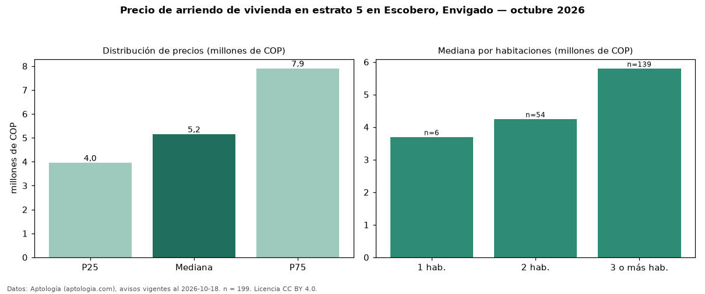

Precio de arriendo de vivienda en estrato 5 en Escobero, Envigado — octubre 2026
Con 199 avisos vigentes, el canon mediano de vivienda en estrato 5 en arriendo en Escobero, Envigado es COP 5,15 millones al mes. Por metro cuadrado, la mediana es COP 47.333/m² al mes (n = 196 avisos con área). Incluye todos los tipos de vivienda de estrato 5 del barrio; la mediana de apartamentos del barrio, sin filtrar por estrato, es COP 4,50 millones. El área mediana anunciada es 100 m². El segmento con más oferta es el de 3 o más habitaciones (139 avisos, mediana COP 5,80 millones); pasar de 1 habitación a 3 o más habitaciones cambia la mediana +57 %. La mitad central de los avisos va de COP 3,95 millones a COP 7,90 millones (razón 2,0), una dispersión alta. Datos: Aptología (aptologia.com), CC BY 4.0 — https://www.aptologia.com/arriendo/envigado/escobero. Archivos: PDF, CSV con las cifras y gráfica PNG.

| Avisos únicos | 199 |
|---|---|
| Percentil 25 | COP 3.950.000 |
| Mediana | COP 5.150.000 |
| Percentil 75 | COP 7.900.000 |
| Mediana por m² | COP 47.332 |
Fuente: avisos vigentes de portales inmobiliarios recopilados por Aptología, deduplicados (mínimo 30 avisos únicos por celda). Precios pedidos, no cerrados. Fecha: 2026-10-18.